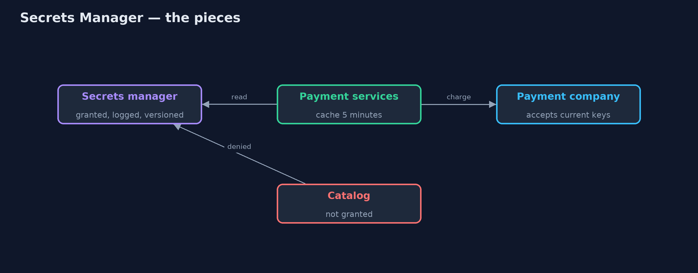
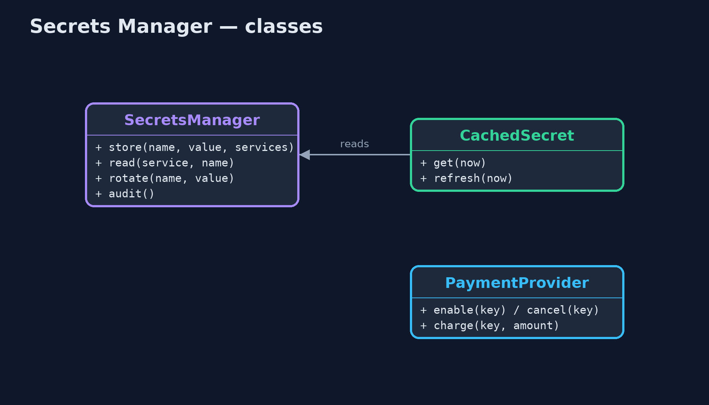
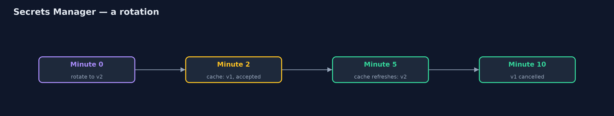
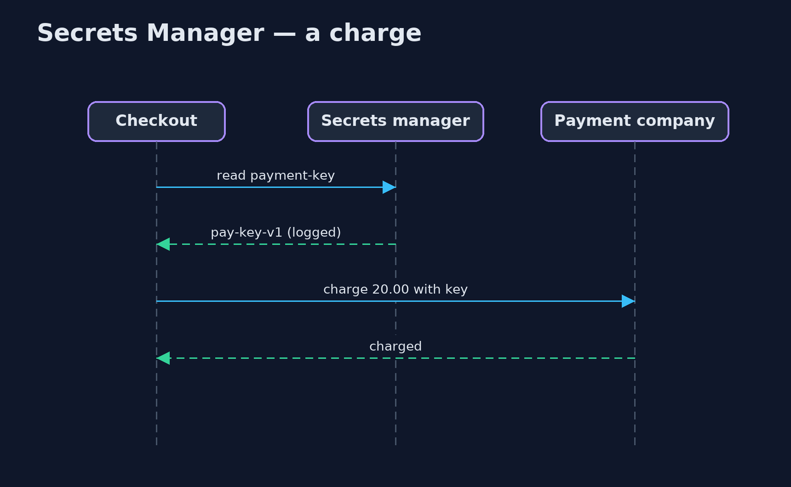

Secrets Manager Pattern
src/main/java/com/jk/explore/secrets/
├── CachedSecret.java How a service holds a secret: fetched from the manager, kept for a few minutes, then fetched again, so a rotation reaches every service without a restart
├── HardCodedConfig.java Before: the payment key written into configuration that is committed with the code and copied into every service's build
├── PaymentProvider.java The external card-payment company
├── SecretsManager.java The pattern: secrets live in one guarded store, never in code
└── SecretsManagerDemo.java The five acts: a key in the code, a key in the manager, rotation without a rebuild, responding to a leak, and the billKeep passwords and keys out of code and builds, in one guarded store that hands each service only the secrets it is allowed, logs every read, and lets a secret be rotated without a rebuild.
Every service needs secrets: database passwords, keys for payment companies, signing keys. The easy mistake is to write them into configuration files that are committed with the code. Then everyone who can read the repository can read the secret, it stays in the history for ever, and changing it means editing, rebuilding and redeploying every service that uses it.
A Secrets Manager is one guarded store for secrets. Services fetch what they need at run time. Each service may read only the secrets it has been granted, every read is logged, and a secret can be rotated to a new version, which the services pick up within minutes, without anyone touching the code.
The idea in everyday terms
Think of the key cabinet in a hotel office. Keys are not taped to the doors or copied for every member of staff. They hang in one locked cabinet. Each person may take only the keys their job needs, every key taken is written in a book, and if a key is lost, the lock is changed and a new key hung in the cabinet. Nobody has to rebuild the hotel.
The scenario
The online store's payment key was written in a configuration file committed with the code, and built into three services: checkout, refunds and subscriptions. Forty people could read the repository, and so could read the key. Changing it meant editing, rebuilding and redeploying all three services.
Run
./gradlew runThe demo tells the story in 5 acts, each printing exact numbers that the tests check:
| Act | What it shows |
|---|---|
| 1. A key in the code | The payment key is built into 3 services and readable by the 40 people with repository access; changing it means rebuilding all 3. |
| 2. A key in the manager | Checkout reads the key at run time and charges 20.00; catalog asks for it and is refused, because it was never granted. |
| 3. Rotation without a rebuild | Rotated to version 2: at minute 2 checkout still uses v1 (still accepted), at minute 5 its cache refreshes to v2, and v1 is cancelled at minute 10. |
| 4. A leak | The key leaks: it is rotated and cancelled at once; the attacker is refused, and checkout, refused once, fetches v3 and charges. |
| 5. The bill | 5 reads logged, including catalog's denial; the manager is now critical, and each service needs a first credential to reach it. |
Test
./gradlew test4 tests in DemoRunsTest, SecretsManagerTest. Every number the demo prints is asserted, and nothing depends on the clock, so every run gives the same result.
Technologies and versions
| Technology | Version | Used for |
|---|---|---|
| Java | 21 | the code (toolchain set in build.gradle) |
| Gradle | 9.2.1 (wrapper) | build and run, nothing to install |
| JUnit | 5.10.2 | the tests |
| videokit | repository tool | the narrated video and animation: Piper en_US-amy-medium, speed 0.8, longer pauses (the approved amy-slow voice) |
Learning Material
| Document | What it is for |
|---|---|
| Problem statement | the situation and what the project must show |
| Prerequisites | what you need to know first |
| Secrets Manager, explained | the acts in prose |
| Session guide | a one-hour lesson with exercises |
| Animated walkthrough | the acts step by step, narrated |
| Spec | what this project must be true of |
The pattern in one picture
The key never touches the code.

Where each piece sits
A store, and a service's cached copy.

How the data moves
Old and new overlap, then the old is cancelled.

Who calls whom, in order
The key is fetched, not built in.

Video
video/secrets-manager-pattern-explained.mp4 (with .m4a audio and .srt subtitles) is built by video/build_video.sh. Rendered media is not committed.
What it costs
- A critical dependency. If the manager is down when a service starts, the service cannot get its keys; cache sensibly and run the manager for high availability.
- Secret zero. Each service needs one first credential to reach the manager; use the platform's own identity for it rather than another stored password.
- Rotation has moving parts. Services cache keys, so an old key must stay valid for a grace period, or services must fetch again when a key is refused.
When this is too much
A learning project on one laptop can use environment variables. Once a secret guards real money or real data, or is shared by several services, it belongs in a manager.
Where you have already met this
- HashiCorp Vault, AWS Secrets Manager, Azure Key Vault and Google Secret Manager.
- Kubernetes Secrets, often fed from one of the above.
- Spring Cloud Vault, which loads secrets into Spring configuration.
Where this sits
This project is in security-design-patterns, next to Token Authentication, whose signing key is exactly the kind of secret that belongs here.